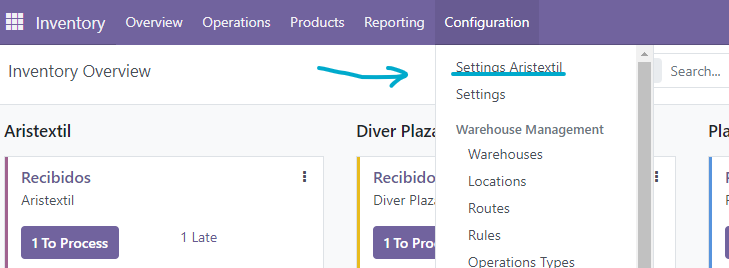
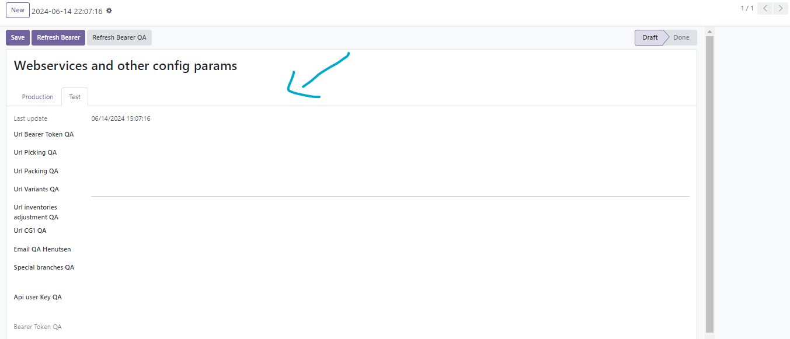
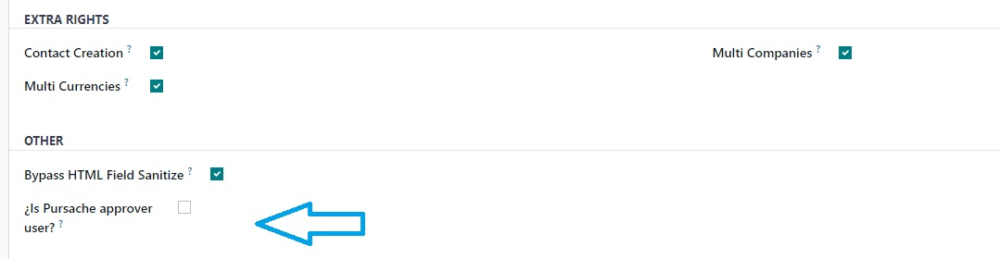
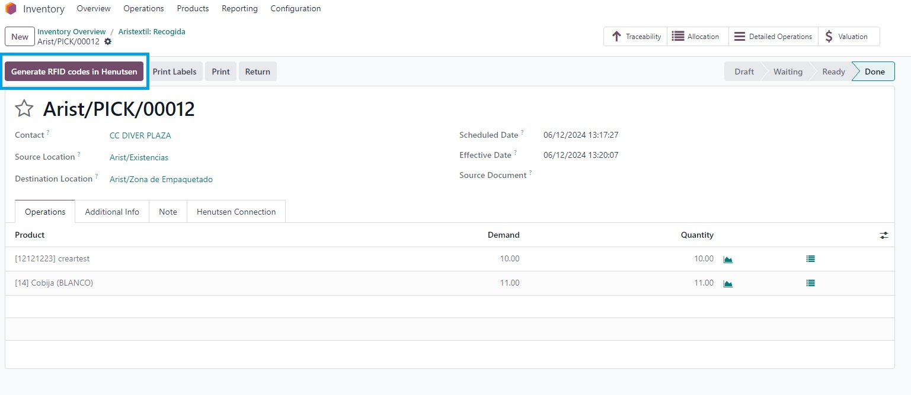
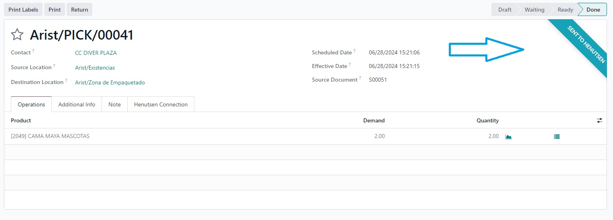
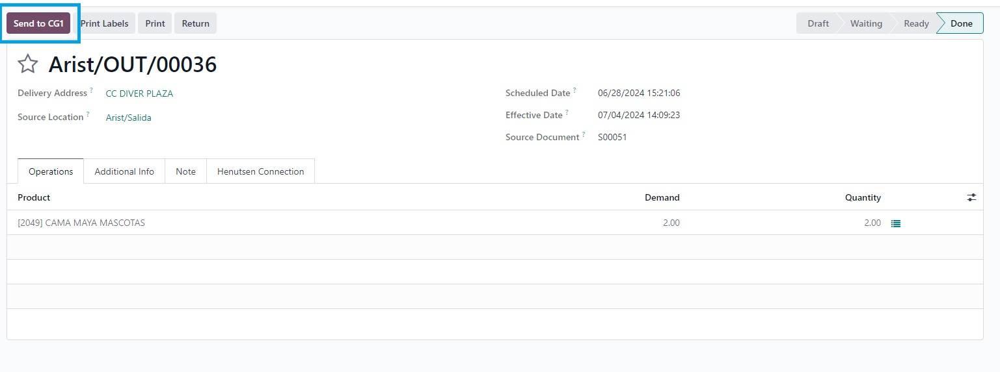

Henutsen RFID System
Description
Henutsen RFID System is a module that improves the operation of the Odoo Inventory module.
This module allows users to manage the inventory of products using RFID technology with Henutsen system.
The module has a bidirectional integration with the Henutsen system, allowing the user to manage the inventory of products in Odoo the easy way.
How to use & Improvements
To use the Henutsen RFID System module, you must simply install it in your Odoo instance.
After installing the module, you must configure the Henutsen system credentials in the Odoo settings.


The system is able to determine if the Odoo instance is production or test, so please configure the system accordingly.
To use the Sales approval flow, you must configure the users that will be able to approve sales in the users configuration section.

The system will be show the user in the picking operation, the button to send the picking to the Henutsen system.
This feature is only available for operations with a company branch as a destination location.

The system will show a ribbon in the picking operation view if the process was successful.

The module also has a integration with CG1 system, allowing to manage the accounting of the company with this system.

Improvements
POS Close Session Guavana is a module that improves the operation of the Odoo POS module.
Some of its improvements are:
- Improves the session closure flow and cash register balance:
- The system has an additional option for users called "Authorized to close cash register with differences"

- Users without this option will not be able to close the amount register in the payment method that have differences greater than the specified amount.

- The cash register closure now has two states, count and review, in count state, the unauthorized user will not be able to see the expected amounts for cash register closure.

- Now you can send POS sales to bank automatically when closing the session whit the toggle button in the POS close session popup.

- The system will send the POS sales taking into account the registered difference and the cash opening amount.

- In review state, the user can see the expected totals and close the session, however, he will not be able to return to the count state if he is not an authorized user.

- Improves the view of the session closure:
- You can view the totals of each payment method used in the POS session.

- Once the session is in "Closed & Posted" state, the system allows the download of reports in different formats.

- The system allows you to select in which format the user wants the download.

- The system allows you to select a default format, in the Point of Sale configuration section.

- The system sends an email to all Point of Sale Administrators